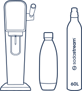

Art
saturator
do wody gazowanej
ART, NIEBIESKI
ZMIEŃ SWOJĄ WODĘ
W GAZOWANĄ JUŻ
W KILKA SEKUND!
Pij wodę! Z SodaStream to proste!
SodaStream to EKOLOGIA
Wybierając ekspres do gazowania wody ART w
zestawie z
wielorazowymi
butelkami SodaStream, nie
tylko
ograniczysz zużycie
plastiku, ale także zmniejszasz
generowanie odpadów i
przyczyniasz się do
zmniejszenia swojego śladu
węglowego. Bycie EKO jest
proste!
SodaStream to ZDROWIE
Woda gazowana świetnie
nawadnia organizm, a dla
wielu osób ma bardziej
orzeźwiający smak, niż
woda
niegazowana. Dzięki temu
pijemy jej więcej i unikamy
napojów słodzonych, które
mogą zawierać dużą ilość
cukru. Woda z bąbelkami to
zdrowsza alternatywa
dla
osób, które chcą unikać
nadmiaru kalorii i cukru w
diecie!
SodaStream to KOMFORT
Koniec z noszeniem ciężkich
zgrzewek z butelkami wody i
napojami gazowanymi!
SodaStream pozwala
dostosować
ilość gazu i smak
napojów bez wychodzenia z domu - a tym
samym,
oszczędza Twój czas i
pieniądze. To
praktyczne
rozwiązanie dla tych, którzy
chcą cieszyć się wygodą
picia
napojów gazowanych w
domowym zaciszu.
Zestaw SodaStream Art zawiera:

1. Niebieski saturator do gazowania wody SodaStream ART
2. Jedną butelkę FUSE do gazowania wody o pojemności 1 l
3. Różowy cylinder z gazem CO2 Quick Connect
Bąbelkowanie jest proste jak 1-2-tssss
1
Nalej zimną wodę z
kranu do butelki
gazującej
SodaStream i
zamocuj ją w
saturatorze ART.
2

Kiedy usłyszysz
charakterystyczne
kliknięcie
dociśnij
butelkę w stronę
urządzenia.
3
A gdy butelka będzie w
pozycji pionowej...
nagazuj wodę tak, jak
lubisz!
Nagazuj wodę tak, jak lubisz
Czy wolisz małe, czy duże bąbelki? Dzięki urządzeniu do gazowania
wody SodaStream ART
wodę nagazujesz zawsze tak, jak lubisz.
Bez wyrzeczeń. Bez kompromisów. Stwórz idealny
napój gazowany,
dopasowany do każdego gustu.
1-2 naciśnięcia
woda lekko
gazowana
3-4 naciśnięcia
woda średnio
gazowana
5 naciśnięć
woda mocno
gazowana
Dołącz do
BĄBELKOWEJ rewolucji
SodaStream!
Ekologia od kuchni
Wyeliminuj nawet 1769* butelek plastikowych
Dołącz do SodaStream i wyeliminuj razem z nami do 78 miliardów
plastikowych butelek jednorazowego użytku do 2025 roku.
Czas na ARTystyczne orzeźwienie
Dodaj do nagazowanej wody ulubione naturalne dodatki: limonkę,
lub kolorowe kostki lodu, i ciesz się pysznym orzeźwieniem
na co
dzień. Wystarczy saturator do gazowania wody
SodaStream ART,
butelka FUSE i zwykła woda z kranu... i
gotowe!
Rozkoszuj się smakiem bąbelków!
Woda to za mało? Mamy na to sposób! Poznaj całą gamę przepysznych
syropów! Pink
Grapefruit, Cloudy Lemonade, Orange Mango, 7
dodaj odrobinę syropu i ciesz się mega smakiem z mniejszą ilością
cukru!
Jedna SodaStream - wiele możliwości
#PushForBetter